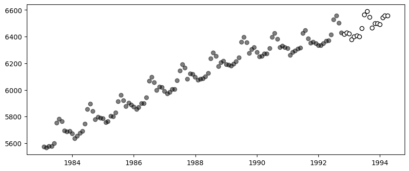
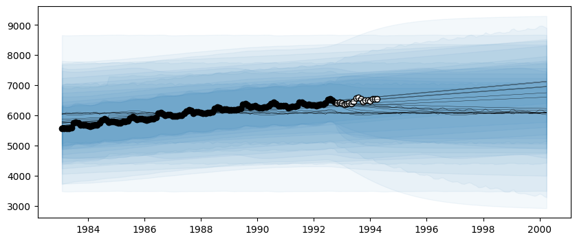

Time Series Decomposition
This tutorial shows how to decompose AutoGP models into their constituent temporal components, to gain more insight into the learned time series structures.
The relevant method is AutoGP.decompose.
import AutoGPimport CSV
import Dates
import DataFrames
import PyPlotLoading Data
AutoGP.seed!(10)data = CSV.File("assets/M1266.csv")
M3 = DataFrames.DataFrame(data);
df = M3[:,["ds","y"]];We next split the data into a training set and test set.
n_test = 18
n_train = DataFrames.nrow(df) - n_test
df_train = df[1:end-n_test, :]
df_test = df[end-n_test+1:end, :]
fig, ax = PyPlot.subplots(figsize=(10,4))
ax.scatter(df_train.ds, df_train.y, marker="o", color="k", alpha=.5)
ax.scatter(df_test.ds, df_test.y, marker="o", color="w", edgecolor="k", label="Test Data")
PyObject <matplotlib.collections.PathCollection object at 0x778f98059a60>Creating an AutoGP Model
model = AutoGP.GPModel(df_train.ds, df_train.y; n_particles=18);ds_future = range(start=df.ds[end]+Dates.Month(1), step=Dates.Month(1), length=2*size(df_test)[1])
ds_query = vcat(df_train.ds, df_test.ds, ds_future)
forecasts = AutoGP.predict(model, ds_query; quantiles=[0.025, 0.975]);Let us visualize the forecasts before model fitting. The model clearly underfits the data.
fig, ax = PyPlot.subplots(figsize=(10,4))
for i=1:AutoGP.num_particles(model)
subdf = forecasts[forecasts.particle.==i,:]
ax.plot(subdf[!,"ds"], subdf[!,"y_mean"], color="k", linewidth=.25)
ax.fill_between(subdf.ds, subdf[!,"y_0.025"], subdf[!,"y_0.975"], color="tab:blue", alpha=0.05)
end
ax.scatter(df_train.ds, df_train.y, marker="o", color="k")
ax.scatter(df_test.ds, df_test.y, marker="o", color="w", edgecolor="k", label="Test Data")
PyObject <matplotlib.collections.PathCollection object at 0x778f8f90a900>Model Fitting via SMC
AutoGP.fit_smc!(model; schedule=AutoGP.Schedule.linear_schedule(n_train, .025), n_mcmc=50, n_hmc=25, verbose=false);
forecasts = AutoGP.predict(model, ds_query; quantiles=[0.025, 0.975]);fig, ax = PyPlot.subplots(figsize=(10,4))
for i=1:AutoGP.num_particles(model)
subdf = forecasts[forecasts.particle.==i,:]
ax.plot(subdf[!,"ds"], subdf[!,"y_mean"], color="k", linewidth=.5)
ax.fill_between(
subdf.ds, subdf[!,"y_0.025"], subdf[!,"y_0.975"];
color="tab:blue", alpha=0.05)
end
ax.scatter(df_train.ds, df_train.y, marker="o", color="k", label="Observed Data")
ax.scatter(df_test.ds, df_test.y, marker="o", color="w", edgecolor="k", label="Test Data")
PyObject <matplotlib.collections.PathCollection object at 0x778f8d8175f0>Decomposing into Constituent Kernels
weights = AutoGP.particle_weights(model)
kernels = AutoGP.covariance_kernels(model)
for (i, (k, w)) in enumerate(zip(kernels, weights))
println("Model $(i), Weight $(w)")
display(k)
endModel 1, Weight 0.1047078523238027
×
├── LIN(0.14; 0.23, 0.05)
└── +
├── +
│ ├── ×
│ │ ├── ×
│ │ │ ├── LIN(0.18; 0.41, 0.11)
│ │ │ └── GE(0.16, 1.42; 0.07)
│ │ └── LIN(0.44; 0.12, 0.05)
│ └── +
│ ├── ×
│ │ ├── LIN(0.30; 0.20, 0.08)
│ │ └── PER(0.23, 0.31; 0.05)
│ └── LIN(0.26; 0.27, 0.23)
└── LIN(0.09; 0.11, 0.79)
Model 2, Weight 0.0361298068161129
×
├── LIN(0.14; 0.23, 0.05)
└── +
├── ×
│ ├── ×
│ │ ├── +
│ │ │ ├── GE(0.49, 1.26; 0.18)
│ │ │ └── LIN(0.52; 0.15, 0.22)
│ │ └── LIN(0.74; 0.12, 0.17)
│ └── GE(0.62, 0.98; 0.05)
└── +
├── ×
│ ├── LIN(0.89; 0.26, 0.10)
│ └── PER(0.23, 0.31; 0.05)
└── LIN(0.22; 0.14, 0.70)
Model 3, Weight 0.06115923536154616
×
├── LIN(0.17; 0.29, 0.04)
└── +
├── +
│ ├── +
│ │ ├── +
│ │ │ ├── ×
│ │ │ │ ├── LIN(0.08; 0.32, 0.53)
│ │ │ │ └── LIN(0.60; 0.10, 0.13)
│ │ │ └── ×
│ │ │ ├── LIN(0.67; 0.03, 0.28)
│ │ │ └── GE(0.19, 1.76; 0.06)
│ │ └── +
│ │ ├── ×
│ │ │ ├── LIN(0.23; 0.20, 0.09)
│ │ │ └── PER(0.18, 0.31; 0.04)
│ │ └── LIN(1.02; 0.28, 0.33)
│ └── LIN(0.08; 0.13, 0.61)
└── LIN(0.11; 0.32, 0.24)
Model 4, Weight 0.05765497451892912
×
├── LIN(0.17; 0.29, 0.04)
└── +
├── ×
│ ├── LIN(0.89; 0.01, 0.34)
│ └── ×
│ ├── GE(0.39, 1.69; 0.26)
│ └── LIN(0.08; 0.03, 0.30)
└── +
├── ×
│ ├── LIN(0.23; 0.20, 0.09)
│ └── +
│ ├── PER(0.18, 0.31; 0.04)
│ └── ×
│ ├── LIN(0.10; 1.09, 0.18)
│ └── LIN(0.58; 0.04, 0.13)
└── +
├── LIN(0.23; 0.12, 1.30)
└── LIN(0.44; 0.05, 0.23)
Model 5, Weight 0.08412270828154682
×
├── LIN(0.14; 0.23, 0.05)
└── +
├── +
│ ├── GE(0.24, 1.60; 0.01)
│ └── ×
│ ├── LIN(0.30; 0.20, 0.08)
│ └── PER(0.23, 0.31; 0.05)
└── +
├── LIN(0.11; 1.35, 0.26)
└── LIN(0.17; 0.19, 0.26)
Model 6, Weight 0.0611062884120964
×
├── LIN(0.14; 0.23, 0.05)
└── +
├── +
│ ├── ×
│ │ ├── GE(0.43, 1.56; 0.09)
│ │ └── LIN(0.32; 0.25, 0.26)
│ └── +
│ ├── ×
│ │ ├── LIN(0.30; 0.20, 0.08)
│ │ └── PER(0.23, 0.31; 0.05)
│ └── LIN(0.11; 0.17, 0.57)
└── LIN(0.07; 0.06, 0.52)
Model 7, Weight 0.05012538373480415
×
├── LIN(0.06; 0.30, 0.06)
└── +
├── GE(0.76, 1.85; 0.23)
└── ×
├── LIN(0.32; 0.20, 0.08)
└── +
├── LIN(0.28; 0.26, 0.15)
└── PER(0.29, 0.31; 0.07)
Model 8, Weight 0.0008966800224218749
×
├── GE(2.06, 1.54; 0.08)
└── +
├── +
│ ├── LIN(0.58; 0.47, 0.45)
│ └── LIN(0.41; 0.86, 0.11)
└── PER(0.58, 0.21; 0.14)
Model 9, Weight 0.04677692738637331
×
├── LIN(0.14; 0.23, 0.05)
└── +
├── +
│ ├── ×
│ │ ├── +
│ │ │ ├── GE(0.24, 1.60; 0.01)
│ │ │ └── LIN(0.23; 0.17, 0.67)
│ │ └── LIN(1.05; 0.16, 0.25)
│ └── ×
│ ├── LIN(0.30; 0.20, 0.08)
│ └── PER(0.23, 0.31; 0.05)
└── LIN(0.60; 0.37, 0.71)
Model 10, Weight 0.07740537180316114
×
├── LIN(0.06; 0.30, 0.06)
└── +
├── PER(0.63, 3.27; 0.16)
└── +
├── +
│ ├── ×
│ │ ├── LIN(0.32; 0.20, 0.08)
│ │ └── PER(0.29, 0.31; 0.07)
│ └── LIN(0.18; 0.13, 0.54)
└── LIN(0.11; 0.07, 0.05)
Model 11, Weight 0.005994615555764634
×
├── LIN(0.12; 0.48, 0.13)
└── +
├── GE(1.04, 1.81; 0.24)
└── ×
├── LIN(0.38; 0.18, 0.06)
└── PER(0.44, 0.21; 0.04)
Model 12, Weight 0.06594317195255328
×
├── LIN(0.14; 0.23, 0.05)
└── +
├── +
│ ├── ×
│ │ ├── GE(0.99, 1.67; 0.11)
│ │ └── GE(0.55, 1.58; 0.06)
│ └── +
│ ├── ×
│ │ ├── LIN(0.30; 0.20, 0.08)
│ │ └── PER(0.23, 0.31; 0.05)
│ └── LIN(0.22; 0.14, 0.70)
└── LIN(0.37; 0.12, 0.10)
Model 13, Weight 0.1091385252477062
×
├── LIN(0.06; 0.17, 0.04)
└── +
├── +
│ ├── GE(0.24, 1.60; 0.01)
│ └── ×
│ ├── LIN(2.24; 0.16, 0.06)
│ └── PER(0.23, 0.31; 0.05)
└── LIN(0.48; 0.26, 0.94)
Model 14, Weight 0.06101996901340416
×
├── LIN(0.17; 0.31, 0.04)
└── +
├── +
│ ├── GE(1.42, 1.52; 0.03)
│ └── +
│ ├── +
│ │ ├── LIN(2.80; 0.26, 0.33)
│ │ └── LIN(0.08; 0.21, 0.16)
│ └── +
│ ├── ×
│ │ ├── LIN(0.21; 0.19, 0.08)
│ │ └── PER(0.19, 0.31; 0.03)
│ └── LIN(0.09; 0.23, 0.30)
└── LIN(0.10; 0.28, 0.46)
Model 15, Weight 0.021780226716162084
×
├── LIN(0.17; 0.29, 0.04)
└── +
├── +
│ ├── ×
│ │ ├── LIN(0.44; 0.18, 0.61)
│ │ └── PER(0.92, 1.31; 0.13)
│ └── +
│ ├── ×
│ │ ├── LIN(0.61; 0.23, 0.10)
│ │ └── PER(0.18, 0.31; 0.04)
│ └── LIN(0.03; 0.29, 0.82)
└── LIN(0.17; 0.15, 0.02)
Model 16, Weight 0.026089343061335483
×
├── LIN(1.19; 0.22, 0.14)
└── +
├── +
│ ├── LIN(0.49; 0.36, 0.33)
│ └── +
│ ├── ×
│ │ ├── LIN(0.30; 0.20, 0.08)
│ │ └── PER(0.23, 0.31; 0.05)
│ └── LIN(0.22; 0.14, 0.70)
└── ×
├── LIN(0.06; 0.04, 0.12)
└── GE(0.37, 1.85; 0.10)
Model 17, Weight 0.0870652658540169
×
├── LIN(0.14; 0.23, 0.05)
└── +
├── +
│ ├── GE(1.48, 1.50; 0.10)
│ └── +
│ ├── ×
│ │ ├── LIN(0.30; 0.20, 0.08)
│ │ └── +
│ │ ├── PER(0.23, 0.31; 0.05)
│ │ └── LIN(0.18; 0.16, 0.21)
│ └── LIN(0.61; 0.09, 0.30)
└── LIN(0.13; 0.07, 0.77)
Model 18, Weight 0.042883653938260095
×
├── LIN(0.17; 0.29, 0.04)
└── +
├── +
│ ├── +
│ │ ├── ×
│ │ │ ├── LIN(0.67; 0.03, 0.28)
│ │ │ └── +
│ │ │ ├── GE(1.08, 1.75; 0.30)
│ │ │ └── GE(0.52, 1.02; 0.05)
│ │ └── ×
│ │ ├── LIN(0.23; 0.20, 0.09)
│ │ └── PER(0.18, 0.31; 0.04)
│ └── LIN(0.17; 0.31, 0.31)
└── LIN(0.18; 0.39, 0.11)decomposed_models = AutoGP.decompose(model);# Helper function to pretty print covariance.
function show_string(x)
io = IOBuffer()
Base.show(io, MIME("text/plain"), x)
return String(take!(io))
end
# Plot the decomposition of `model` into its constituent parts.
function plot_decomposition(model::AutoGP.GPModel)
kernels = AutoGP.covariance_kernels(model)
forecasts = AutoGP.predict(
model, ds_query;
quantiles=[0.025, 0.975]);
fig, axes = PyPlot.subplots(
nrows=AutoGP.num_particles(model),
ncols=2,
tight_layout=true,
figsize=(12, 6*AutoGP.num_particles(model)),
)
for i=1:AutoGP.num_particles(model)
subdf = forecasts[forecasts.particle.==i,:]
# axes[i].set_title(show_string(kernels[i]), ha="left")
axes[i,1].plot(subdf[!,"ds"], subdf[!,"y_mean"], color="k", linewidth=1, label=show_string(kernels[i]))
axes[i,1].fill_between(
subdf.ds, subdf[!,"y_0.025"], subdf[!,"y_0.975"];
color="tab:blue", alpha=0.05)
axes[i,1].scatter(df_train.ds, df_train.y, marker="o", color="k", label="Observed Data")
axes[i,1].scatter(df_test.ds, df_test.y, marker="o", color="w", edgecolor="k", label="Test Data")
axes[i,2].text(0.5, 0.5, show_string(kernels[i]), transform=axes[i,2].transAxes, va="center", ha="left")
axes[i,2].set_axis_off()
end
return fig, axes
endplot_decomposition (generic function with 1 method)idx = 13
fig, ax = plot_decomposition(decomposed_models[idx]);
fig.suptitle("Decomposition of Learned Model $(idx)", fontsize=18, va="center", y=1);